Light photographs from recent wanderings—places where texture, breath, and memory briefly align.
Aug 2023Canal-Side NapLazy afternoon guardian of a Jordaan café window.Aug 2023Oosterdok DuskSolitary commuter absorbing the last peach light above Centraal.Aug 2023Almond Blossom PilgrimsCrowd hushes before Van Gogh’s sky-blue branches in Amsterdam.
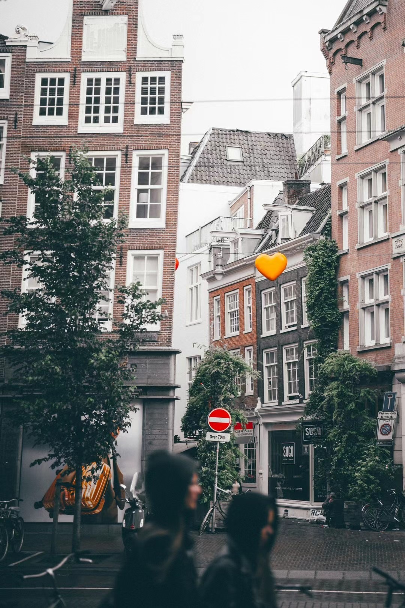
Aug 2023Warm Hearts on BerenstraatCanal houses stitched with playful hearts and rain-polished bricks.Jun 2023The Passage, Den HaagGlass barrel vault guiding late afternoon shoppers.Jun 2023Bouquet at the Tram StopCurly-haired commuter balancing blush roses and a text thread.
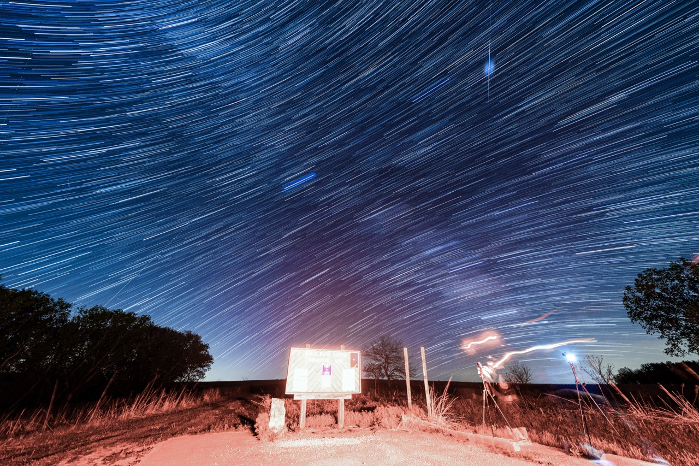
Oct 2022Apple River StarstormTwo-hour swirl over the prairie trailhead in western Illinois.9 May 2024Aurora Palette over Door CountyRed organ pipes melting into teal over Lake Michigan.9 May 2024Teal Veil, Midnight LakeQuietest phase of the storm, lake like inked vellum.9 May 2024Reverie under KP-9Arms raised as red aurora floods Gilson Park.9 May 2024Self-Portrait in Electric MistTripod shadow leaning into violet curtains.8 Apr 2024Diamond Ring over WapakonetaPhotosphere bursting through totality’s last seam.8 Apr 2024Baily's BeadsPromontories glowing at the rim of the Moon’s shadow.
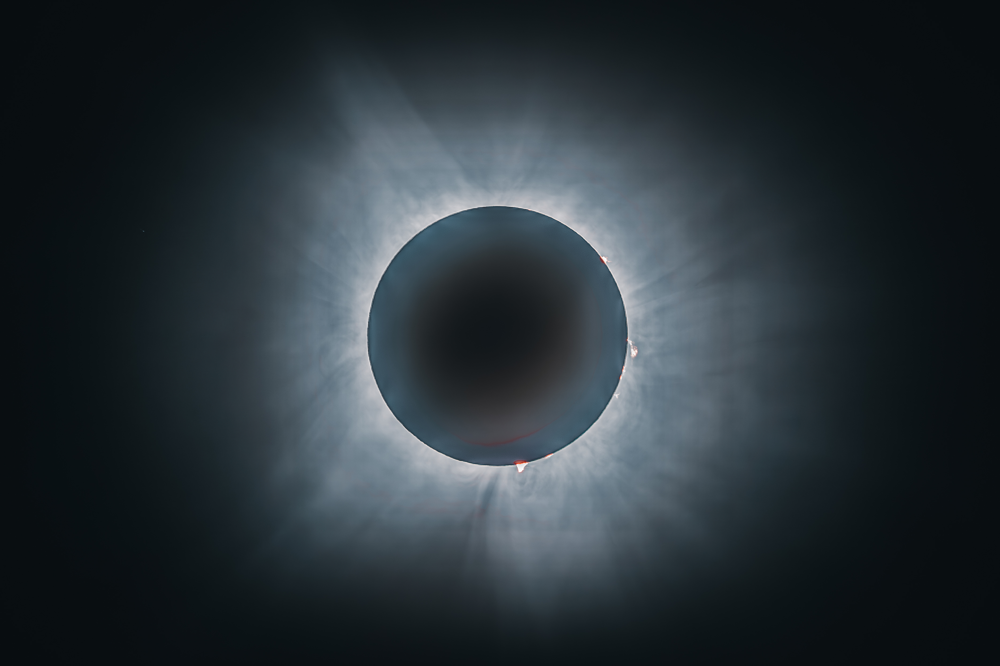
8 Apr 2024Corona with ProminencesFeathered magnetic loops and hot pink flares around the Moon.8 Apr 2024Totality ProgressionComposite arc of crescents tightening into full shadow.
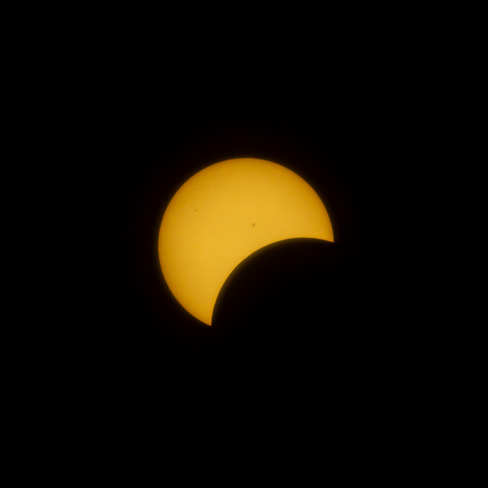
8 Apr 2024Filtered CrescentSharp yellow sliver minutes before totality.
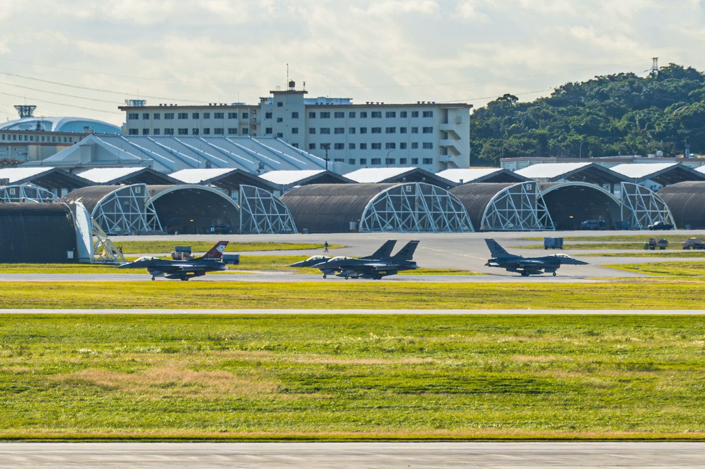
Nov 2016Kadena Line ChecksThunderbirds and Vipers idling under arched hangars in Okinawa.
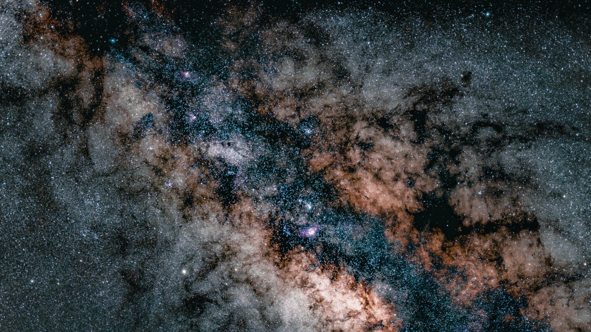
Aug 2021Sagittarius Dust LanesCleaned stack of nebulae and soot near Qinghai.Aug 2021Galactic Spine over QinghaiVertical Milky Way erupting from plateau clouds.Aug 2021Desert Perseid BloomNomad camp lit while meteors radiate from Cassiopeia.
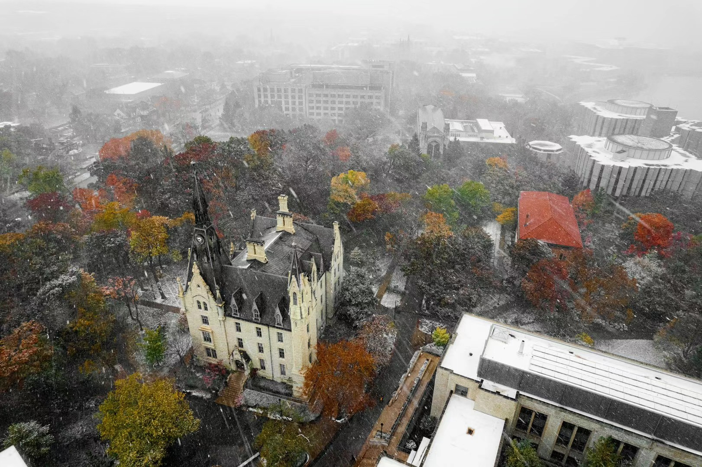
Oct 2020Northwestern First SnowFall canopy and Gothic hall swallowed by lake-effect squall.18 May 2025Belvédère Kondiaronk, MontréalRain-damp tulips guarding the downtown lookout.22 Jan 2024Frozen Lake Michigan FlightDrone pass over a sealed lake in subzero Chicago.9 May 2024Aurora over Green BayKP-9 storm after an overnight escape from Evanston.12 Jul 2024Midnatt Jordbærhøst 🍓, Bjørklund Gård, Strøksnes, Nordland, NorwayEndless twilight with a kind host inside the Arctic Circle.14 Aug 2021Siguniangshan Base CampFirst expedition morning with a new kit in Sichuan.Aug 2021Blue Butterfly GleamMacro study of a blue wing landing on a purple bloom in Qinghai.Winter 2020Blue Star TrailsTwo-hour spin above a downtown Beijing siheyuan near Bai Ta Si.Aug 2021Buddha GalaxyTemple courtyard deep in Qinghai with the Milky Way for a roof.Autumn 2023Jinmao Interior LightSkylit atrium reflections inside the tower's elevator banks.Apr 2021Lujiazui Tree StudyFog-swallowed towers with one stubborn branch for a soulless pause.Aug 2021Nyainbo Yuze SunsetTibetan ridgelines catching one last burst of amber light.2020Old Forbidden CityFaded monochrome treatment to mimic archival Beijing postcards.
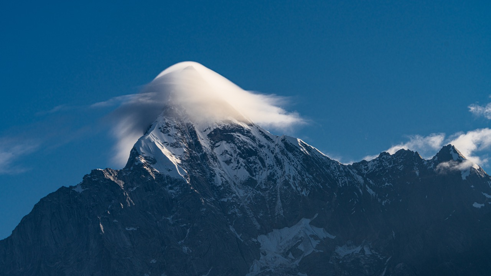
Aug 2021Siguniang CloudsA cloud hat twirling like a wind-lifted skirt over the summit.
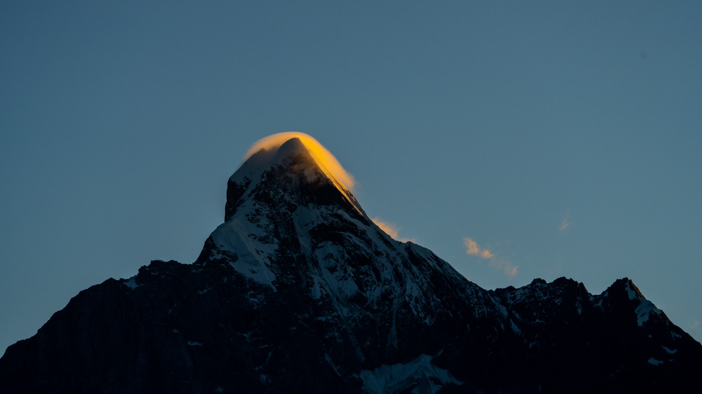
Aug 2021Siguniang Sunrise GlowAlpenglow revealing sharp ridges as the valley wakes.May 2020Wumen Star TrailsMidnight exposure keeping the palace dead center while the sky spins.
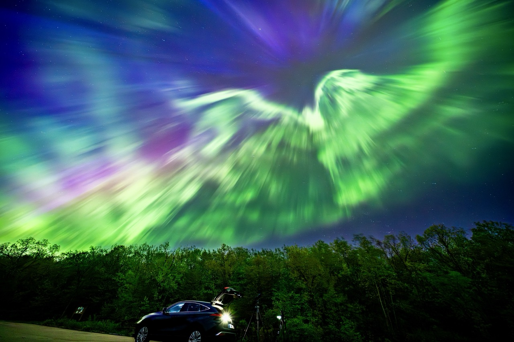
May 2024High Cliff AuroraWide-angle sweep over Lake Winnebago with the forest and car lit by KP-9.
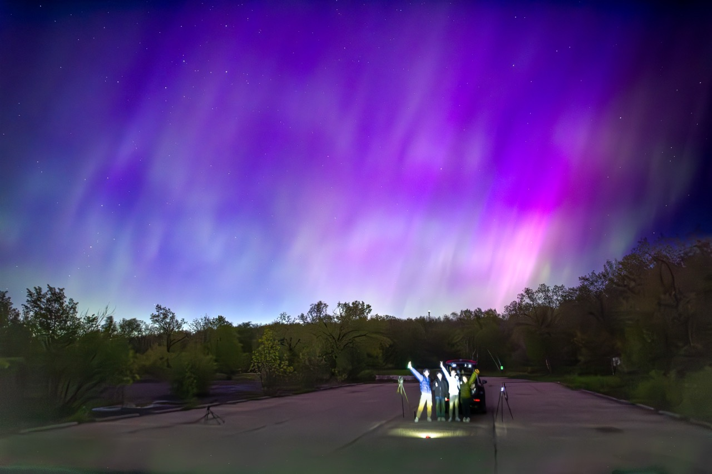
May 2024Field Crew under KP-9Nobody spoke while purple banners engulfed the entire dome.
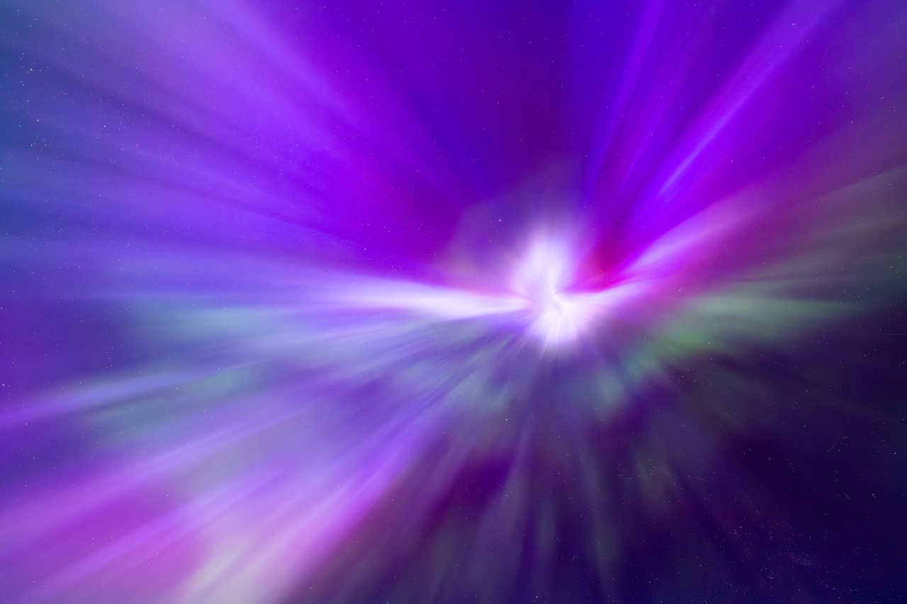
May 2024Purple Aurora BandProton arcs fanning out like drapes over Wisconsin farm fields.Nov 2024Bermudian ReefPink sand and reef shadows blurred together from 120 feet up.
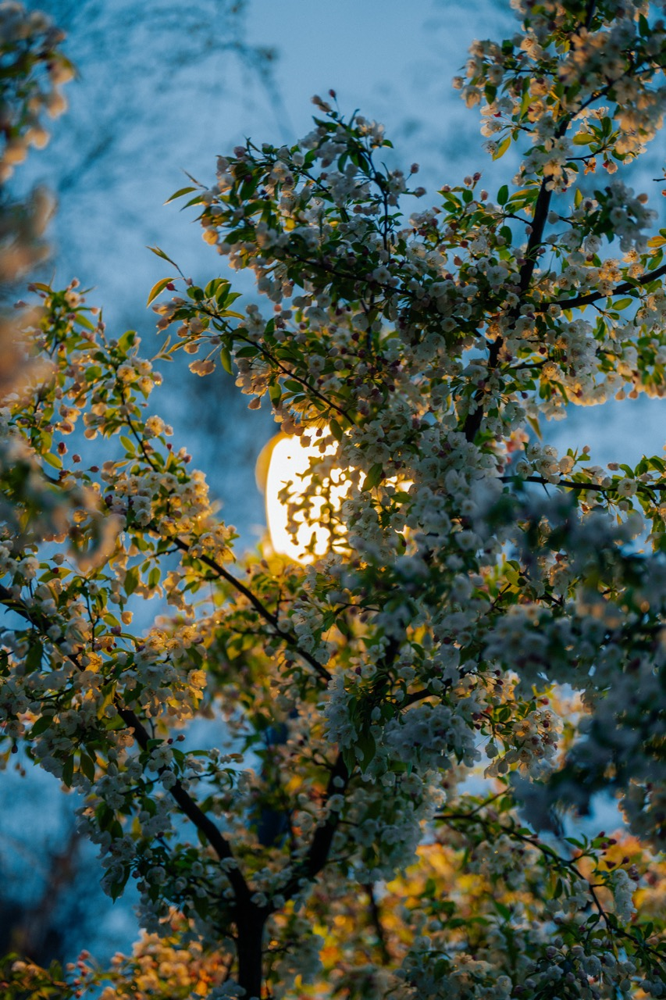
Spring 2024Northwestern Snowlight BlossomsCampus lamps made the petals look dusted in fresh powder.Spring 2024Lamp-Lit Cherry GlowBlue hour + warm lamp made the tree feel like neon cotton candy.Sep 2023Skylines & PuddlesFacing west from over the lake so the harbors frame the skyline.
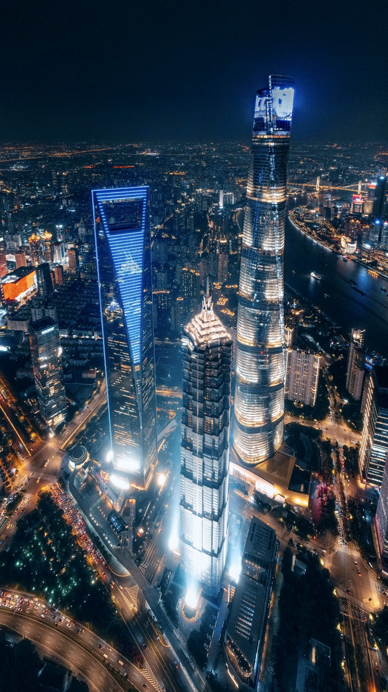
Summer 2023Shanghai Skyline FadeHigh-altitude hover with neon blues and golds for a cyberpunk tone.
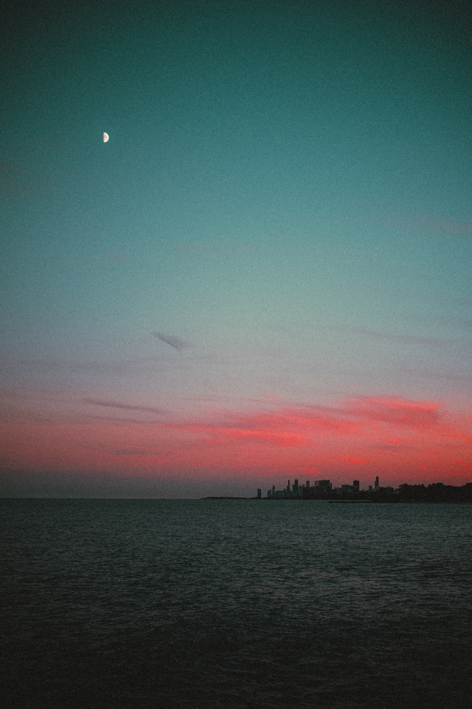
Aug 2024UV-Style SunsetFalse-color grading chases what the sensor almost saw.
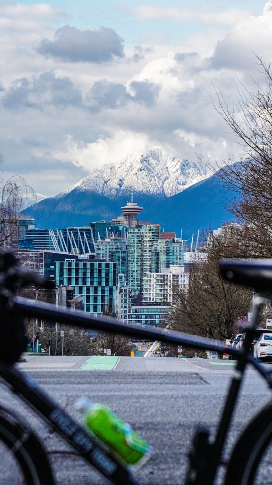
Oct 2024Seawall CyclistRental frame parked in front while the TV tower points at the snowy ridgeline.Mar 2023Vancouver Street StudyRobson Street rendered like an oil painting with the Coast Mountains behind.